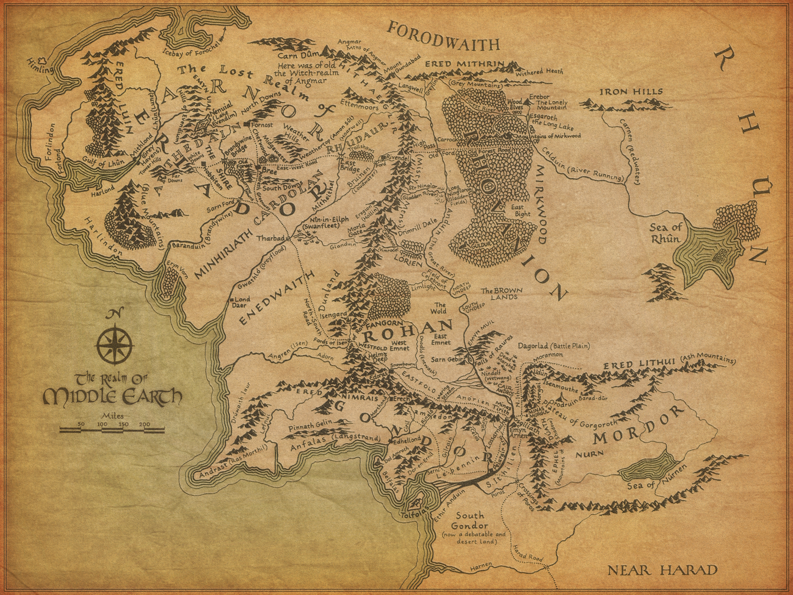

A map of Middle-Earth

The map illustrates:
- The kingdom of the South; Gondor
- The dark land; Mordor
- The kingdom Rohan
- The region Eriador
- The wilderland; Rhovanion
If you are interested to learn more in detail about each kingdom, land or
region, you can just look here:
Tolkien Gateway